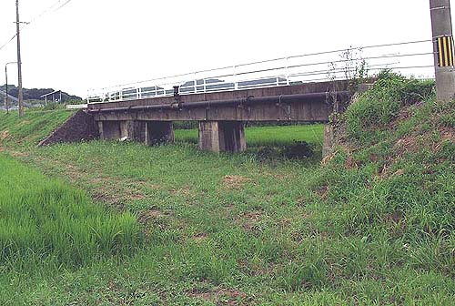
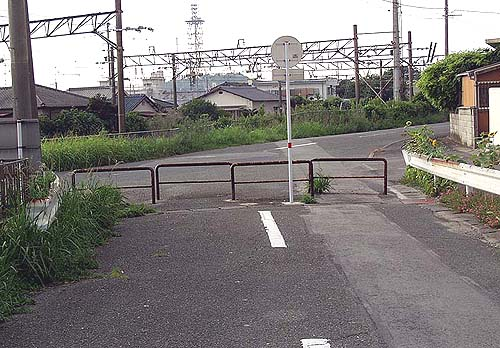
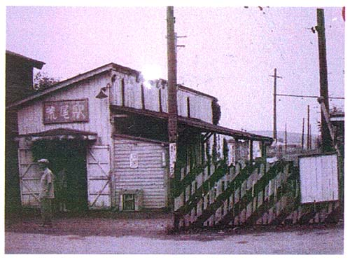
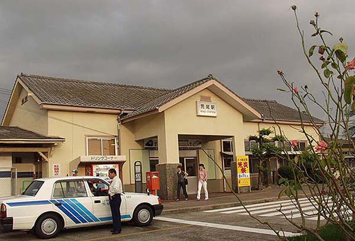
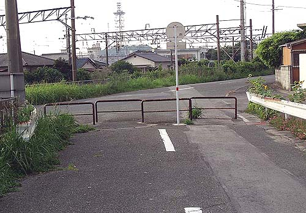
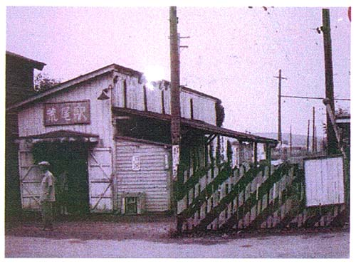
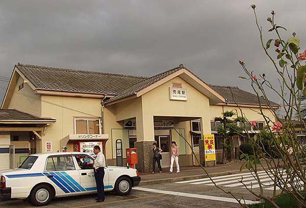
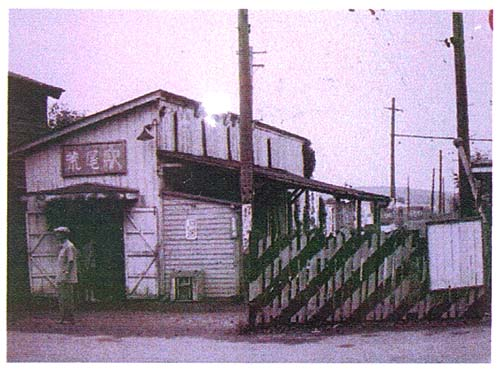
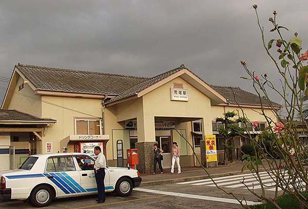
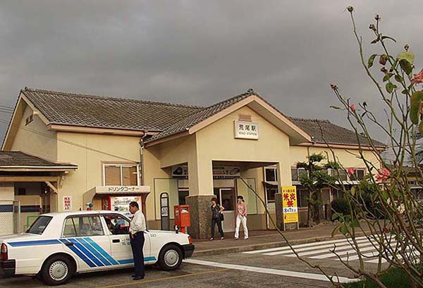

（2004年8月1日撮影）  わずかに鉄路時代の橋が残る（2004年8月1日撮影）  目前がＪＲ鹿児島本線。右へ進行した所に荒尾駅がある。（2004年8月1日撮影）  荒尾市電 荒尾駅（「荒尾市交通局56年のあゆみ」より）  ＪＲ鹿児島本線 荒尾駅（2004年8月1日撮影）
わずかに鉄路時代の橋が残る（2004年8月1日撮影）  目前がＪＲ鹿児島本線。右へ進行した所に荒尾駅がある。（2004年8月1日撮影）  荒尾市電 荒尾駅（「荒尾市交通局56年のあゆみ」より）  ＪＲ鹿児島本線 荒尾駅（2004年8月1日撮影）
目前がＪＲ鹿児島本線。右へ進行した所に荒尾駅がある。（2004年8月1日撮影）  荒尾市電 荒尾駅（「荒尾市交通局56年のあゆみ」より）  ＪＲ鹿児島本線 荒尾駅（2004年8月1日撮影）
荒尾市電 荒尾駅（「荒尾市交通局56年のあゆみ」より）  ＪＲ鹿児島本線 荒尾駅（2004年8月1日撮影）
ＪＲ鹿児島本線 荒尾駅（2004年8月1日撮影）